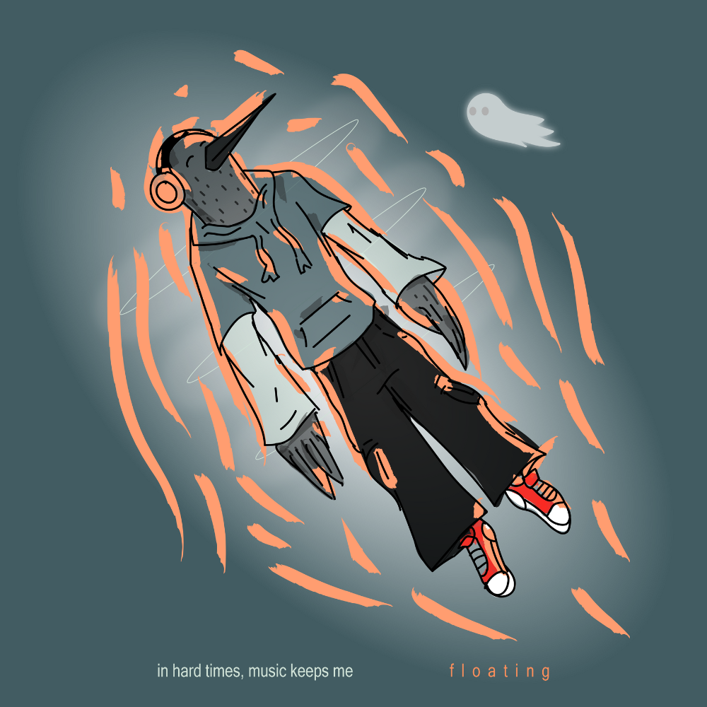

SNOOZECROW

Snoozecrow is a character that is long overdue to have his
debut. In concept, he's an ambient musician with a friendly ghost who haunts him, and
his story is one of dealing with anxiety through self soothing and music.
This piece is created on Illustrator and inspired by my deep love for modern cartoons
like Bojack Horseman and Over the Garden Wall.